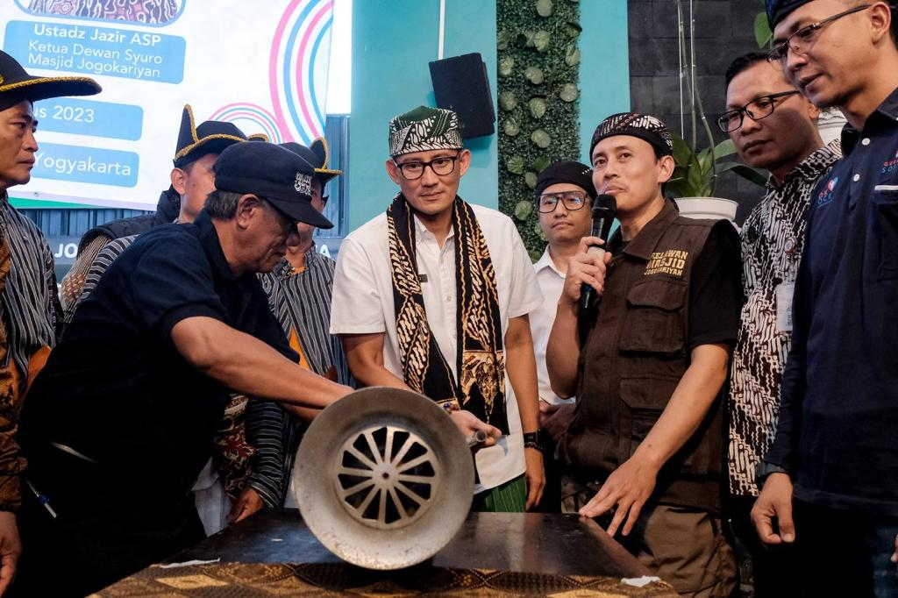
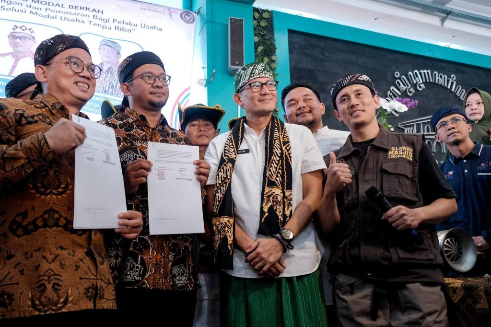
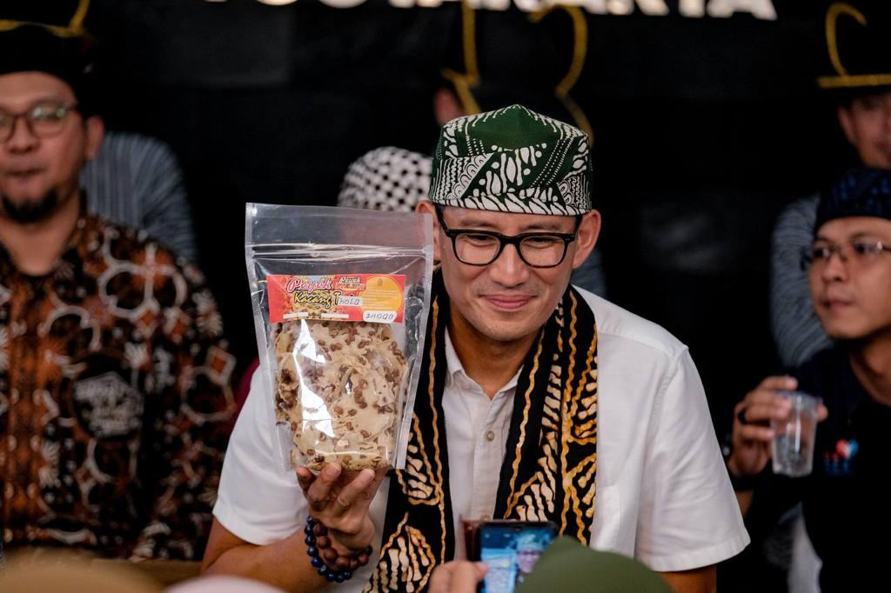

OK OCE Born as a concept at 1998 in Uno’s family, consists of Min and Hank Uno. At that time, many college students from Gorontalo can’t continue their studies at Jakarta, and asking for scholarship to the Uno family. And after they passed the college, they came back to Uno’s farm to work.
After some years, they finally remake and remodel the scholarship program from normal program to enterprenuer scholarship program, consisted of training,marketing, and budgeting school. As a result, Mien R Uno foundation born at 2000.
In 2016, Sandiaga Uno campaigned for the position of Vice Governor of Jakarta, running alongside Anies Baswedan. During this period, Indonesia faced challenging economic conditions, resulting in the closure of numerous companies and a surge in unemployment in Jakarta, affecting around 300 thousand individuals according to available data. In response to these challenges, Uno and Baswedan proposed a solution aimed at fostering entrepreneurship. They introduced the OK OCE program, designed to encourage and support individuals in becoming entrepreneurs, thereby mitigating the impact of economic hardships on the local population. The objective of this program is to establish at least one entrepreneurship hub in each district of Jakarta. Their ambitious goal spans from 2017 to 2022, aiming to create 200 thousand job opportunities through the growth of entrepreneurs in the region.
Then, in 2017 they started the program in 44 subdistrict on Jakarta with their curriculum of 7 TOP (7 Tahapan OK OCE Prima) which consists of Registration, Training, Assistance, Licensing, Marketing, Financial Records and Access to Capital.
In 2018, Mr. Uno resigned from his position to campaign for Vice President alongside Mr. Prabowo. Subsequently, the OK OCE Program expanded its reach beyond DKI Jakarta to encompass all of Indonesia. The OK OCE program became a cornerstone of Mr. Sandi's political platform as he aspired to become a vice presidential candidate, setting a goal of generating 2 million jobs within a five-year period until 2024. Despite Mr. Uno not securing the vice-presidential position, the OK OCE Movement successfully fulfilled its promise to create 2 million jobs without relying on the state budget. The achievement was realized through grassroots efforts and community contributions.
As of 2023, OK OCE has already generated 1.5 million jobs, leaving just 500,000 more to reach the stated goal. Notably, the OK OCE program's local initiative in DKI Jakarta, now known as JakPreneur, boasts a membership of 340,000 individuals, further exemplifying the widespread impact and success of the program.